This tutorial shows division members how to organize and document research
data in the Lab Notebook of the Data Store using the synthetic
“Material Synthesis” example. You will create a Project
and Collections, register Experimental Steps manually and using templates,
upload datasets, and use filtering and search functions to locate
registered information.
What you will learn
Organize research activities using Projects, Collections, and Experimental Steps in the Lab Notebook.
Register Experimental Steps manually and using predefined templates.
Edit Collections and delete Experimental Steps.
Upload research data as datasets and distinguish relevant Dataset Types.
Filter Experimental Steps within Collections.
Create, save, and reuse Advanced Search queries.
Before you begin
This tutorial is designed for openBIS version 20.10.12 and does not
require prior experience with openBIS.
Before starting this tutorial, you must:
Read the guideline “How to represent research data in the Data Store” to become familiar with the recommended
approach for structuring and connecting research data in the Data Store.
You need to have access to the playground instance
(access restricted to BAM employees with VPN connection). How to log in to the Data Store instances is described in this
guide.
.
If you encounter problems, contact the Data Store team.
Tutorial sequence
This tutorial introduces the Lab Notebook part of the
synthetic “Material Synthesis” example. The Experimental
Steps and datasets registered here will later be connected with Instrument,
Chemical, and Sample objects registered in the Inventory.
Key concepts
Lab Notebook
In the Lab Notebook, each user has a personal workspace
(Space in openBIS) for organizing research projects,
experiments, simulations, analyses, and other activities that generate
research data.
Research activities can be represented as Experimental Steps
organized within Collections of a Project. Datasets should be attached to
the Experimental Step that describes how the corresponding data was generated.
Experimental Steps can also be connected with other Experimental Steps and
related Inventory objects, such as instruments, chemicals, software, and
samples, using parent-child relationships.
These connections make it possible to represent research workflows and
document the provenance of research data in the Data Store.
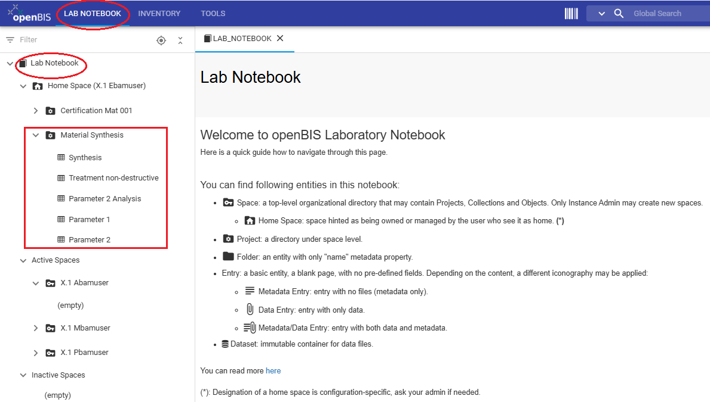
The Material Synthesis Project will be created in the user's
Home Space and contains all th Collections that organize the Experimental
Steps used for the tutorial example.
Lab Notebook structure for "Material Synthesis"
The tutorial example "Material Synthesis" uses the Data Store hierarchy
Space → Project → Collection → Object → Dataset.
In the Lab Notebook, research activities are represented as
Experimental Step objects and datasets are attached to the
corresponding Experimental Steps.
In this tutorial, you will work within your User Space in the Lab Notebook.
You will register a Project, Collections, and Experimental Steps, and attach datasets to the corresponding Experimental Steps.
In follow-up tutorials, you will register the corresponding Inventory
items and connect them with these Experimental Steps to represent the complete research workflow in the Data Store.
Data organization:
openBIS 20.10.12 also supports folders and subfolders. However, the Data
Store recommends primarily organizing research information using the core
structure Project → Collection → Object → Dataset.
Collections, metadata, and parent-child relationships provide a consistent
and scalable way to organize and connect research information while keeping
the Lab Notebook navigation concise.
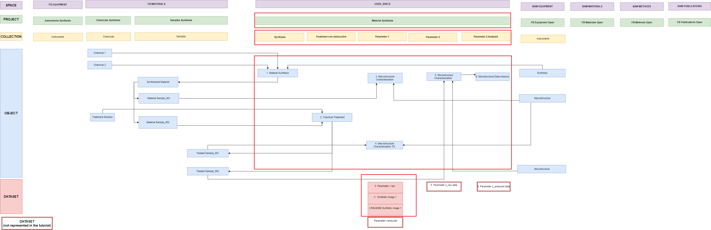
Experimental Steps are represented as objects, organized in Collections
within the Material Synthesis Project. Datasets are
attached to the Experimental Steps that describe how they were generated. Entities outlined in red
represent the Lab Notebook structure and objects that you will create in your User Space during this tutorial.
Tutorial workflow
Create the Project and Collections used to organize the “Material Synthesis” example.
Register Experimental Steps manually and using predefined templates.
Edit the prepared structure and register the remaining Experimental Steps.
Upload research data as datasets and review the uploaded data.
Filter registered Experimental Steps and create an Advanced Search query.
Step 1: Register a Project
Create a Project in the Lab Notebook to represent the research project
Material Synthesis.
Instructions:
Select the upper LAB NOTEBOOK tab.
In the left-hand navigation menu, select Home Space.
Click + Project.
Enter Code: MATERIAL_SYNTHESIS.
Enter the following Description:
This tutorial project demonstrates a simplified workflow for the
synthesis and characterization of a material within openBIS. The
experimental descriptions, metadata, and datasets are synthetic
example data created solely for training and demonstration purposes.
Review all entries and click Save.
Select Home Space in the Lab Notebook and use
+ Project to open the project-registration form.
General information
Mandatory fields in openBIS are marked with an asterisk (*). Project codes
should be meaningful and should follow the naming conventions agreed for
the Data Store. Once saved, a project code cannot be modified or reused.
Identification information:
If the Code or Description fields are not
displayed, open the More drop-down menu and select
Show Identification Info.
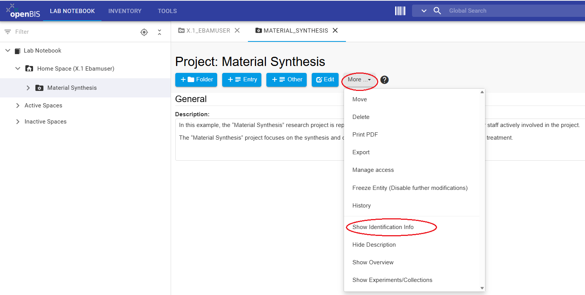
Use More → Show Identification Info to display hidden
identification fields.
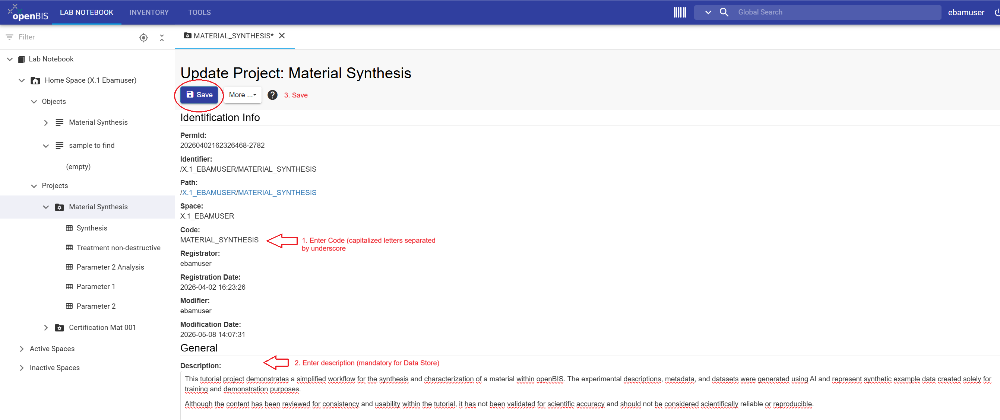
Enter the Project Code and Description, review the entries, and click
Save.
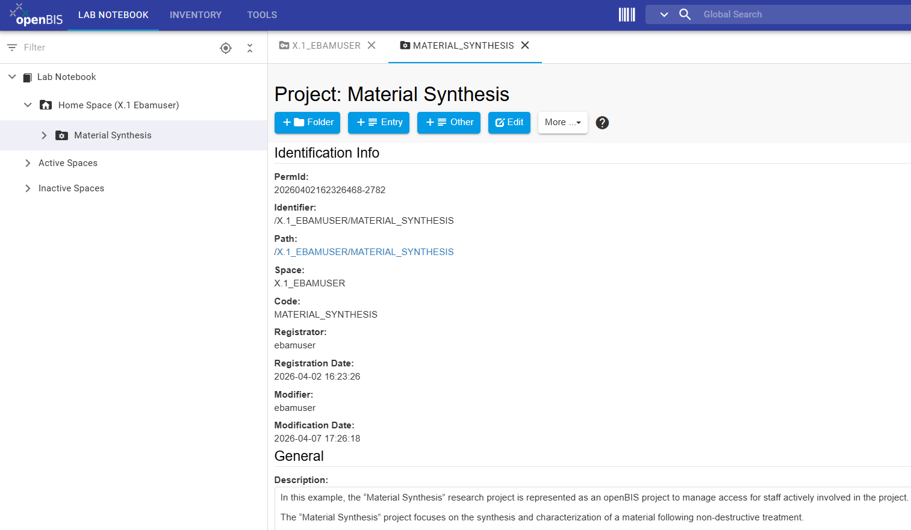
The newly registered Project is displayed under Home Space
in the left-hand navigation menu.
General information: Project access
Access in openBIS can be managed at the Space and
Project levels. Permissions assigned to a Project are
inherited by its Collections, Objects, and Datasets.
For collaborative work within or across divisions, use a dedicated Project
and assign the appropriate Observer, User,
or Admin role to the required users or groups. For more
information, see
roles and rights in the Data Store
.
Collections organize related Experimental Steps and other research
activities within a Project. In this tutorial, you will create five
Collections for the “Material Synthesis” workflow.
Instructions:
Select the Material Synthesis Project.
Click + Other.
Select Collection.
Leave the autogenerated Code (*) unchanged.
Enter Synthesis as the Collection Name.
Leave Default object type empty.
Select List view as the Default Collection View.
Review all entries and click Save.
Repeat the procedure to create the following additional Collections:
Treatment non-destructive,
Structure_TEM,
Parameter 1, and
Parameter 2.
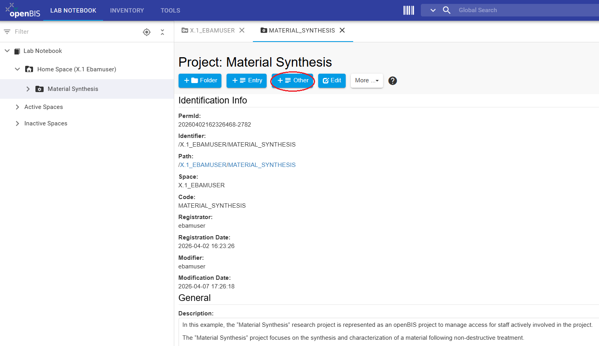
Select the Material Synthesis Project and click
+ Other.
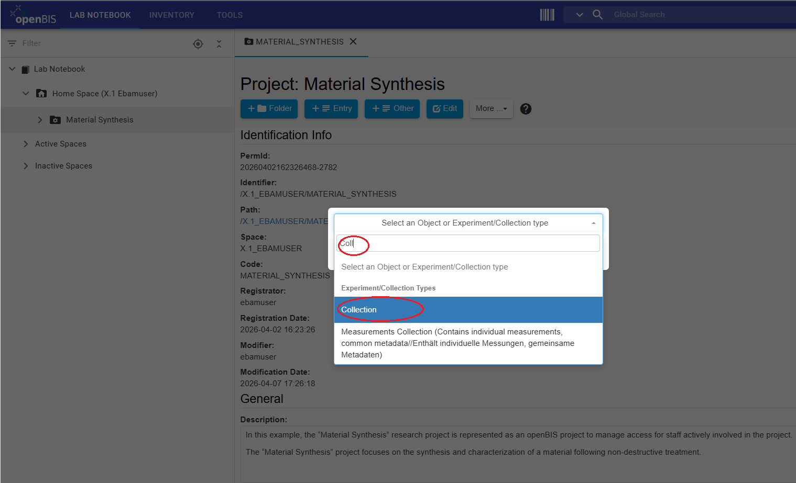
In the type-selection window, select Collection.
Leave the autogenerated Code unchanged, enter the Collection Name, leave
Default Object Type empty, select List View, and save the Collection.
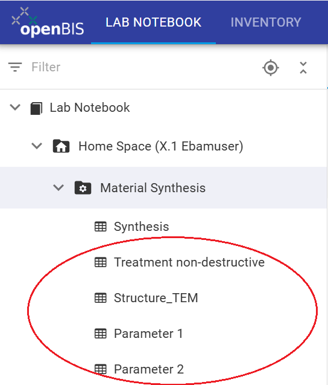
The registered Collections are displayed under the
Material Synthesis Project.
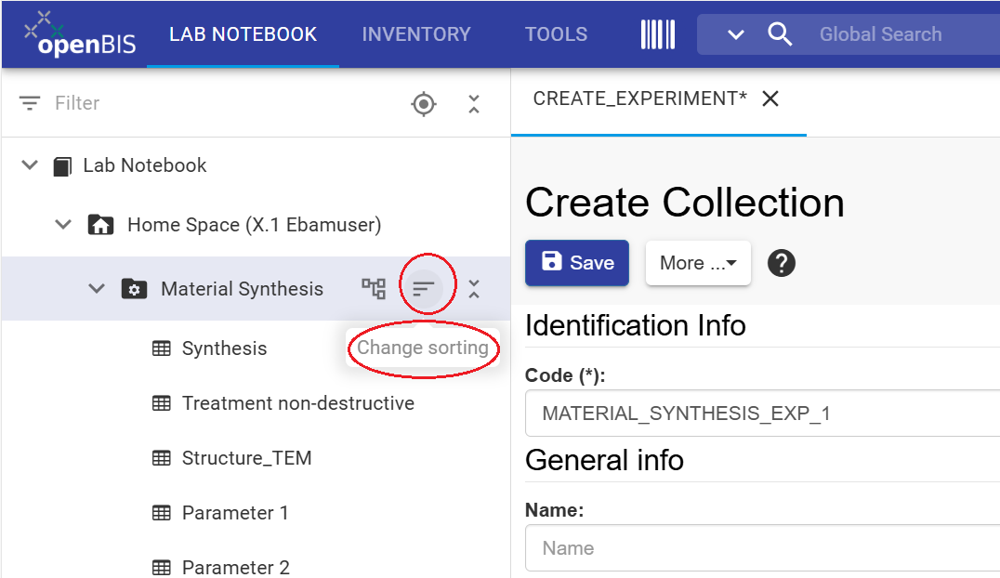
Open the Project context menu and select Change sorting
to modify the display order of Collections.
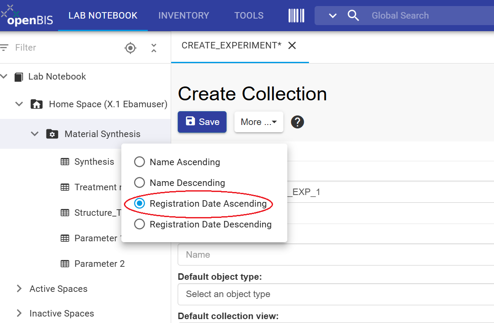
Select a sorting option, for example
Registration Date Ascending.
Back to top
Step 3: Register an Experimental Step
Research activities that generate data, such as experiments,
measurements, simulations, or analyses, can be represented in openBIS as
Experimental Steps.
Instructions:
Navigate to the Synthesis Collection.
Select More → New Object.
Click Select an object type.
Select Experimental Step.
Leave the autogenerated Code unchanged.
Enter Material Demo 001 as the Name.
Complete all mandatory (*) and other relevant properties.
Review all entries and click Save.
General information
The Code is mandatory and is normally generated automatically.
The Name should be meaningful and descriptive.
Only fields marked with an asterisk (*) are mandatory.
Experimental Steps can be edited after registration.
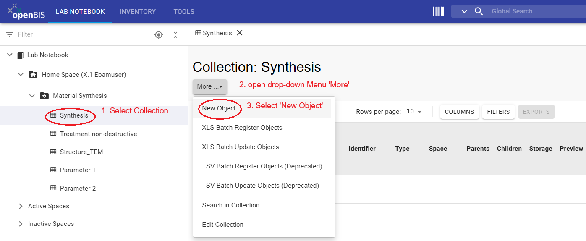
In the Synthesis Collection, select
More → New Object.
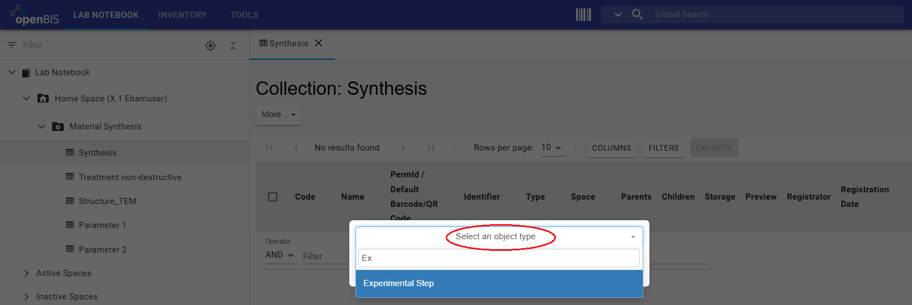
Select Experimental Step as the Object Type.
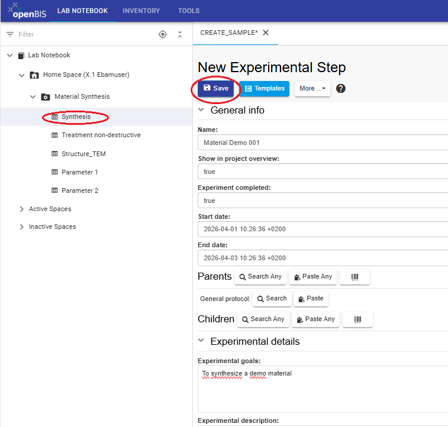
Enter Material Demo 001 as the Name, complete the
mandatory properties (*), and save the Experimental Step.
Back to top
Step 4: Register an Experimental Step using a Template
Templates help standardize metadata and reduce repeated manual data entry
when similar Experimental Steps are registered.
Instructions:
Navigate to the Synthesis Collection.
Select More → New Object.
Select the Object Type Experimental Step.
Open the Templates tab.
Select the template Material Synthesis.
Leave Merge current parents/children disabled.
Click Accept.
Leave the autogenerated Code unchanged.
Enter Material Synthesis as the Name.
Enter Start Date and End Date using the calendar selector.
Enter a comment in the Comments section.
Review all entries and click Save.
Templates:
Templates must be created for a specific Object Type before they are
available for selection. In the Data Store, template configuration is
performed by users with Group Admin rights, typically Data Store Stewards.
Template behavior:
A template can only be selected during object creation; it cannot be
applied retrospectively to an existing object. If a template contains
parent-child relationships that need to be combined with relationships
already present, use Merge current parents/children.
Select the Collection and choose More → New Object.
Select Experimental Step as the Object Type.
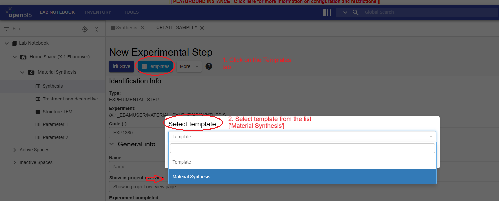
Open the Templates tab and select the
Material Synthesis template.
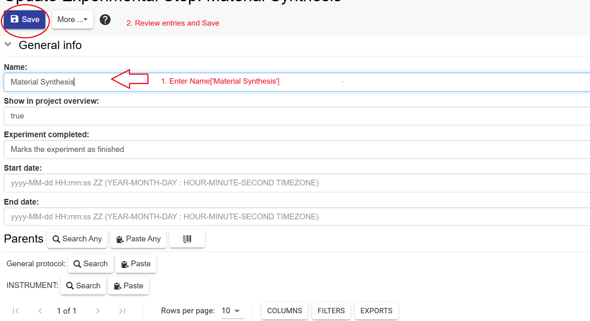
Complete the required values and save the Experimental Step.
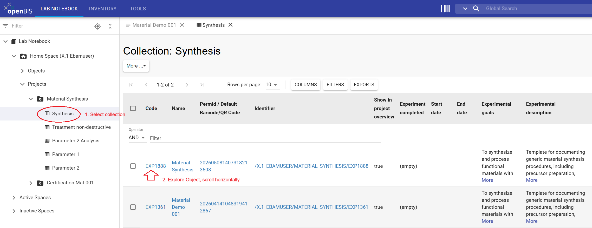
The registered Experimental Step is displayed in the selected Collection.
Back to top
Step 5: Edit Collections and Objects
Consistent naming helps maintain a clear overview of registered Projects,
Collections, Objects, and Datasets. In this step, you will rename one
Collection and delete one Experimental Step.
Exercise: Edit a Collection
Instructions:
Select the Collection Structure_TEM.
Select More → Edit Collection.
Open the Edit tab.
Change the Name to Parameter 2 Analysis.
Review the entry and click Save.
Refresh the page if the updated name is not displayed immediately.
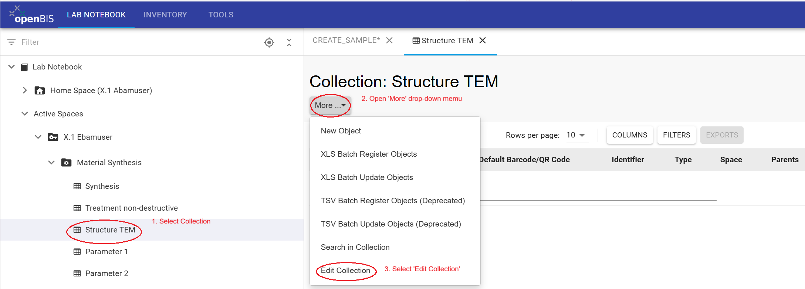
Select the Collection and choose More → Edit Collection.
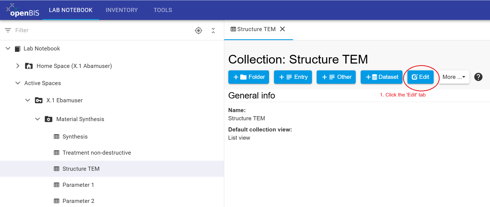
Open the Edit tab to modify the Collection Name.
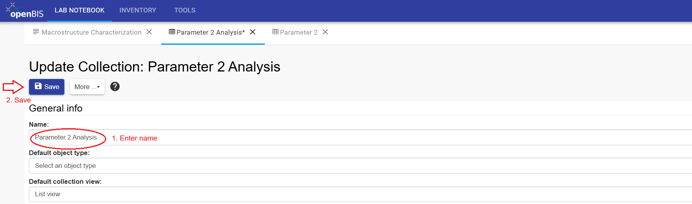
Change the Name to Parameter 2 Analysis and save.
Exercise: Delete an Experimental Step
Instructions:
Navigate to the Synthesis Collection.
Select Material Demo 001.
Click the DELETE tab.
Enter a value in the mandatory Reason (*) field.
Leave Delete also all descendants unchecked.
Click Accept and confirm the deletion.
Return to the Collection and confirm that the object is no longer listed.
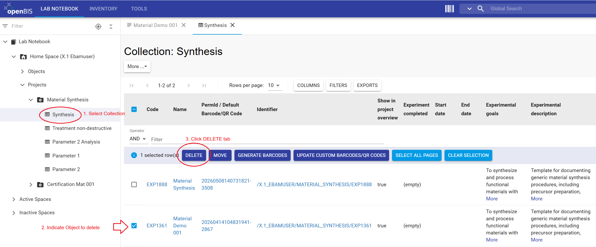
Select Material Demo 001 and open the
DELETE tab.
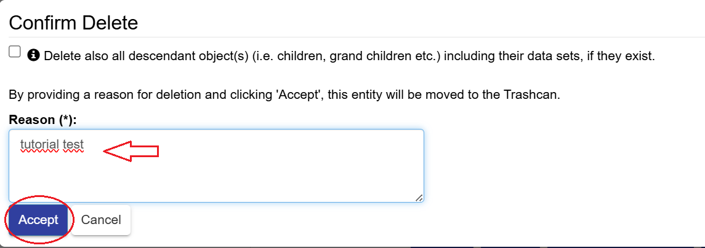
Enter a mandatory deletion reason and leave descendant deletion unchecked.
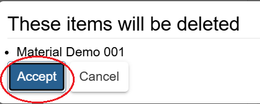
Review the deletion settings and confirm the deletion.
Deletion:
Deleting descendants may also remove connected objects and attached datasets.
If you only want to remove the selected object, leave the descendant-deletion
option unchecked.
General information: Restore deleted objects
Deleted objects are moved to the Trashcan, where they can
be restored or permanently deleted.
Select TOOLS → Trashcan.
Select a deleted object.
Open the Operations drop-down menu.
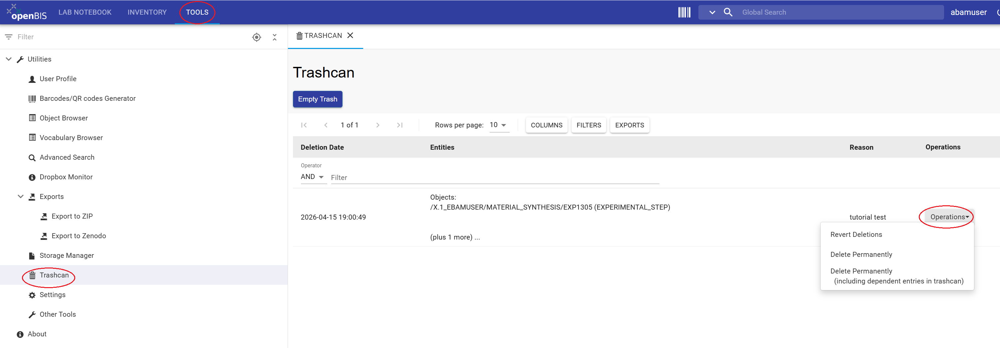
Open TOOLS → Trashcan, select a deleted object, and use
the Operations menu to view available actions.
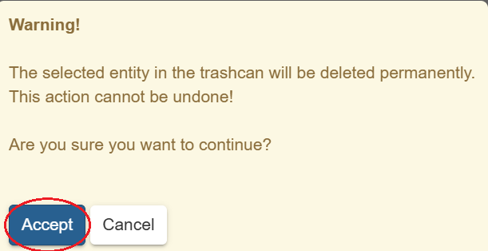
Permanently deleted objects cannot be restored.
Back to top
Step 6: Register additional Experimental Steps using Templates
Register five additional Experimental Steps using the same template-based
procedure introduced in Step 4.
Instructions:
Navigate to the Collection listed in the table below.
Select More → New Object.
Select the Object Type Experimental Step.
Open the Templates tab.
Select the corresponding Template.
Leave Merge current parents/children disabled.
Click Accept.
Leave the autogenerated Code unchanged.
Enter the corresponding Experimental Step Name.
Enter Start Date and End Date.
Enter a comment.
Review all entries and click Save.
Values for each Experimental Step
Experimental Step
Collection Name
Template Name
Experimental Step Name
1
Treatment non-destructive
Chemical Treatment
Chemical Treatment
2
Parameter 1
Macrostructure Characterization
Macrostructure Characterization
3
Parameter 1
Macrostructure Characterization
Macrostructure Characterization TS
4
Parameter 2
Microstructure Characterization
Microstructure Characterization
5
Parameter 2 Analysis
Microstructure data analysis
Microstructure data analysis
Exercise: Review the registered Experimental Steps
Instructions:
Select the Material Synthesis Project.
Select More → Show Overview if the overview is hidden.
Review the registered Experimental Steps in the Objects section.
Scroll horizontally to review properties such as Collection, Registrator, Registration Date, and Modification Date.
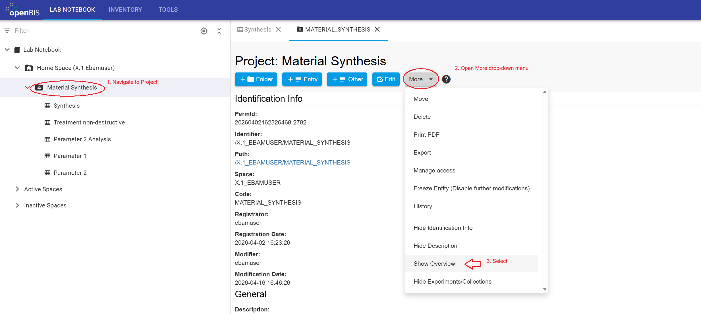
Open the Project and select More → Show Overview.
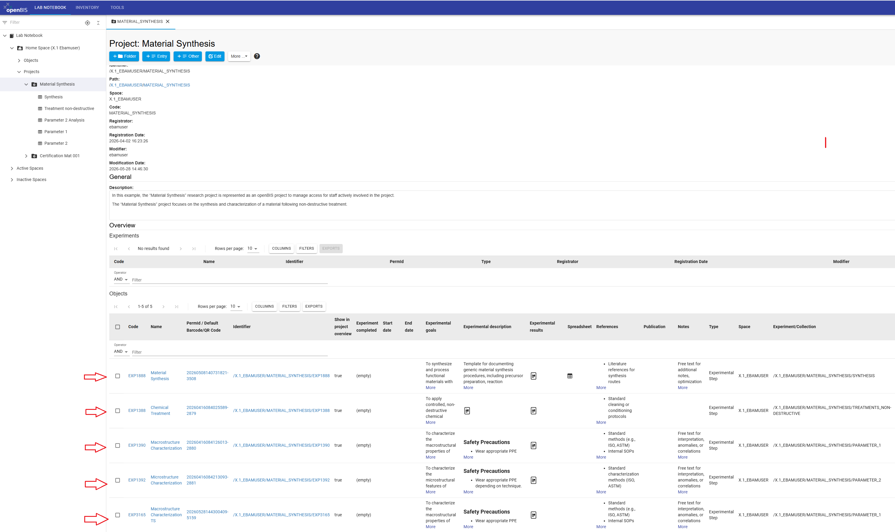
Review the registered Experimental Steps and their properties in the
Project overview.
Back to top
Step 7: Upload Data
The Data Store recommends attaching datasets directly to the
Experimental Step that describes how the data was generated.
Uploaded files are stored in openBIS as Datasets.
Download the tutorial datasets
Download the following files before starting the upload exercises. KeepParameter1_Macroscopic.zipcompressed. The files contained in
datasets.zip will be used individually in the subsequent exercises.
Collections can be filtered by displayed properties and property values.
Advanced Search can be used to locate specific Objects or Datasets across
openBIS.
General information: Filter a Collection
Select the relevant Collection.
Open the COLUMNS tab.
Select the properties to display.
Use the available column filters to restrict the displayed objects.
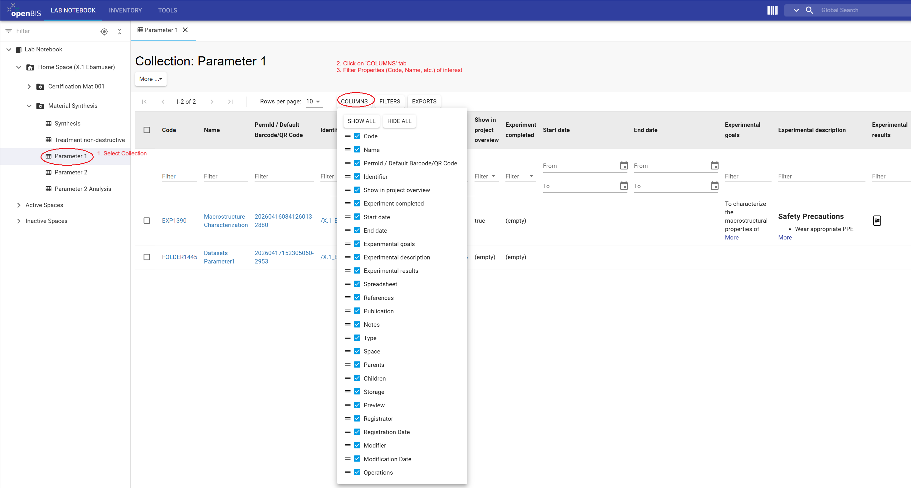
Use the COLUMNS tab to select displayed properties.
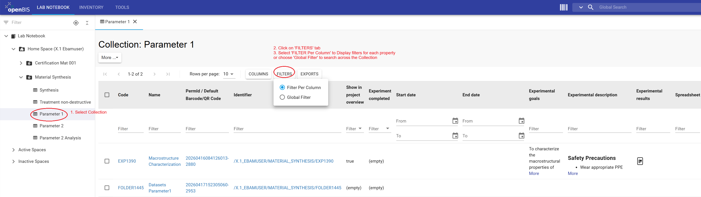
Apply filters to individual columns to locate matching objects.
Exercise: Advanced Search
Instructions:
Select TOOLS → Advanced Search.
Select Search For: Dataset.
Select the AND operator.
Define the first criterion:
Field Type: All,
Field Value: synthetic.
Add a second criterion:
Field Type: Property,
Field Name: Modification Date,
comparator thatIsLaterThanOrEqualTo (Date),
and select the tutorial date.
Add a third criterion:
Field Type: Property,
Field Name: Registrator,
comparator thatEqualsUserId,
and select your user.
Run the search.
Save the query as Datasets-synthetic.
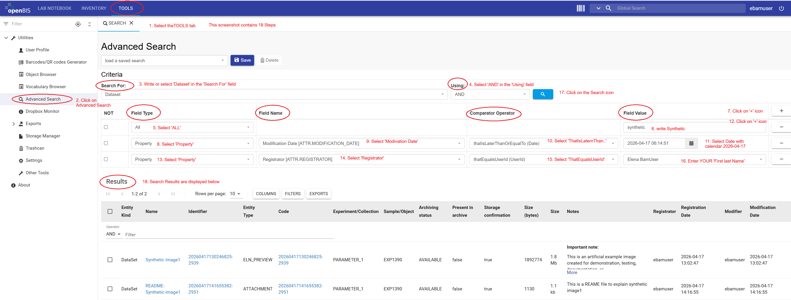
Configure the search criteria and execute the Advanced Search query.
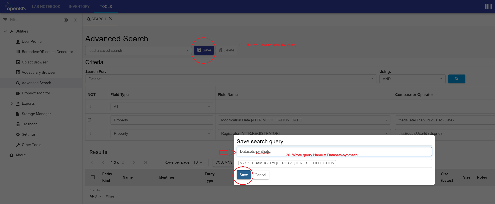
Save the configured query for future use.
Reuse a saved search
Instructions:
Select TOOLS → Advanced Search.
Select Datasets-synthetic from the saved-query list.
Run the search to display the results.
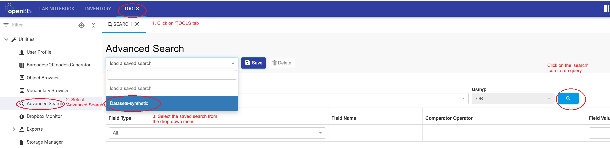
Select a saved query in Advanced Search and run it again.
Back to top
Result
After completing this tutorial, you should be able to organize research
activities in the Lab Notebook using Projects, Collections, and
Experimental Steps; register Experimental Steps manually and using
templates; edit registered information; upload and associate datasets with
the corresponding Experimental Steps; and use filtering and Advanced
Search to locate registered research information.